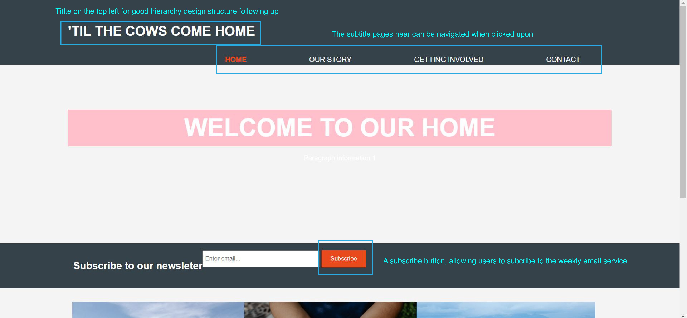

Design Pattern and Principles
Contrast is one of the most common designers come across where they often have to compare different scenarios and seeking the best ways to make things stand out. Some quick example could be having a light coloured text in a dark background which reflects the text much stronger than having a black text in dark background.
The same principles when applied into the web prototype here, the text and images are adequate placed to enhance each other whilst keeping a top-down and "left-to-right" hierarchy principle structure.
Balance is another component which nearly all websites take into account. People think about keeping their designs either symmetrical and asymmetrical especially with their images.
In this prototype the images are carefully placed onto the page where diametres are strictly depicted along with text following most of the time to give a much better cohesive annotated view for audiences to comprehend.
Reflections
From the previous web proposal it appears the colour's of light blue, light pink and black didn't enhance each other but rather making it harder to view at times.
Taking in that feedback this time we've re-examined the colour palette where we added semi-dark blended colour's such as grey with lighter colours having a contrast colour background to make text stand out more.
Design changes that occured between last proposal and the current version is that, much more context is provided whilst having multiple functional form features that users could interact with hence user experience.
Ideation
- What is ideation?
- A "mood" or "feel" for the design
- A unique and creative process
- Designers thoughts and goals
Mood Boards
When creating the website our team first thought about what the websites for and what find of feelings we want people to feel. The images represent what we believe encompass for the websites principles.
From the moodboard I would like to include the light and "fluffy" feeling into a chronomatic colour scheme rather than complementary colours that tends to have a sharper image on the design.
Website Designs and Annotations
Soluta quibusdam ad nostrum vel voluptate delectus sequi dolores quia quaerat officia corrupti, aperiam fugit facere debitis repudiandae praesentium sapiente inventore repellendus, nemo commodi alias!
Iterations
Optio qui, omnis itaque rerum iusto molestiae necessitatibus deleniti quod tenetur id perspiciatis voluptatum dolorum quisquam eius ipsum non architecto labore! Distinctio, tenetur. Officiis, necessitatibus?
References
- Photo by Paul Castanié on Unsplash
- Photo by Davies Designs Studio on Unsplash
- Photo by Vruyr Martirosyan on Unsplash
- Photo by Halacious on Unsplash
- Photo by Rodion Kutsaev on Unsplash
- Photo by Lauren Mancke on Unsplash
- Photo by Fineas Gavre on Unsplash
- Photo by Helene Lopes on Unsplash
- Photo by visuals on Unsplash